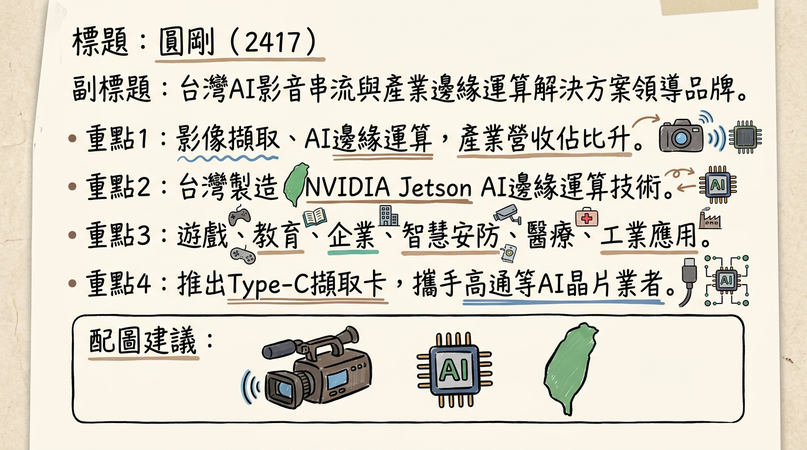
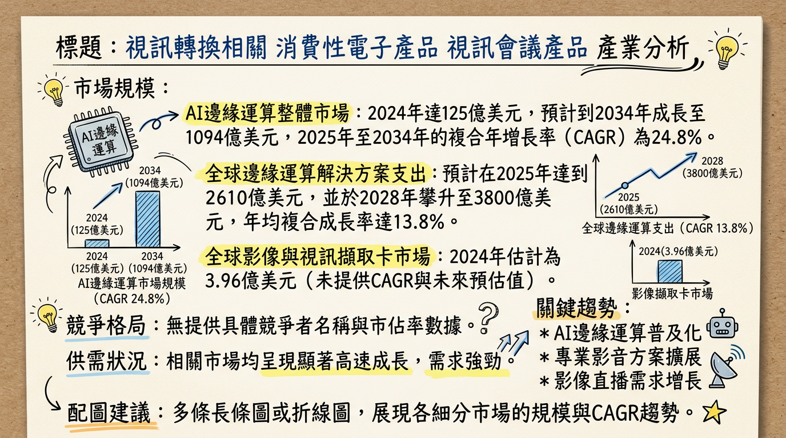
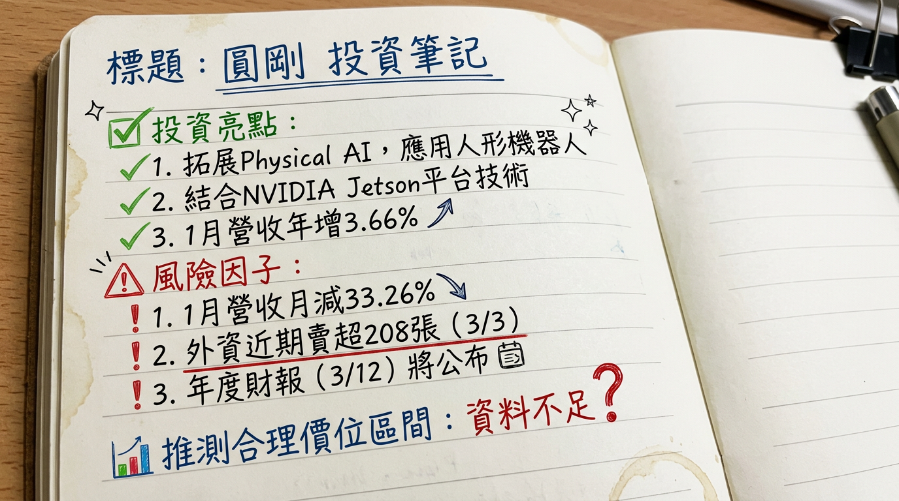

2417 圓剛 深度研究報告
一句話摘要
圓剛（2417）正積極轉型為AI邊緣運算及專業影音解決方案供應商，受惠於「台灣製造」策略優勢，Edge AI業務比重正快速提升，預計2026年將達50%。儘管2025年前三季受非營業收入影響導致虧損擴大，但2025年12月營收創41個月新高，且2026年下半年將有機器人與無人機ODM訂單陸續量產出貨，加上因應記憶體漲價而調漲產品報價，營運有望在2026年逐步轉強，朝向高毛利結構邁進。
公司概覽
圓剛科技（2417）成立於1990年，總部位於新北市中和區，是台灣領先的影像與AI邊緣運算品牌。公司專注於AI影音串流及產業邊緣運算解決方案的開發與製造，並以「台灣製造」作為核心競爭策略。
*
影像擷取與直播設備：擷取卡、直播盒、網路攝影機等，應用於遊戲實況、線上教育、遠端會議、企業直播。
* 專業影音解決方案：影像處理、串流技術、低延遲影像傳輸，支援企業、教育、政府機構。
* AI視訊應用與邊緣運算解決方案：智慧影像辨識、AIoT鏡頭、AI虛擬主播、基於NVIDIA Jetson平台的高效能、低功耗AI邊緣運算嵌入式電腦及載板，應用於智慧安防、遠距醫療、智慧商務、工業自動化、機器人、智慧城市等。近期重點產品包括Type-C擷取卡與NVIDIA Jetson解決方案，並積極與高通（Qualcomm）等AI晶片業者合作。
圓剛科技的營收結構正顯著轉型，產業應用（AI Edge）比重持續提升。
| 事業群 | 2024年佔比 | 2025年1-9月佔比 | 2025年1-9月年成長率 (對2024年同期) | 2026年預期佔比 |
|---|
| 產業應用 (AI Edge) | 29% | 40% | 75% | 50% |
| 消費商業應用 | 71% | 60% | 10% | - |
圓剛科技及其子公司圓展（3669）的生產基地均位於
台灣新北市。公司強調「台灣製造」（MIT）策略，特別在商業應用市場（如企業、教育、政府）中，因歐美對資安規範的重視，台灣製造有助於區隔市場，並成功切入美國與台灣政府的4K視訊設備標案。
核心競爭優勢
「台灣製造」策略優勢：產品符合TAA（美國貿易協定法）與NDAA（美國國防授權法）規範，成功切入高安全需求的政府與大型組織標案（如美國政府4K視訊鏡頭專案、台灣政府與海關專案），具備資安與供應鏈在地化競爭優勢。
AI邊緣運算技術領先：與NVIDIA Jetson平台深度合作，提供高效能、低功耗AI邊緣運算解決方案，並積極投入Physical AI（實體人工智慧）應用，特別是人形機器人領域。
多角化產品線與應用：涵蓋消費性影像擷取設備、專業影音解決方案至高成長的AIoT影像應用、產業邊緣運算，滿足不同市場需求。
ODM專案開發能力：在機器人與無人機等高成長領域手握多個ODM專案，預計2026年下半年量產出貨，顯示其客製化與系統整合能力。
成本轉嫁能力：因應記憶體價格飆漲，已自2025年11月起逐月調漲產品報價，漲幅從五成至翻倍不等，有助於維持毛利結構。
財務分析
月營收趨勢
| 月份 | 金額 (新台幣億元) | 月增率 MoM (%) | 年增率 YoY (%) |
|---|
| 2026年2月 | 2.52 | 1.89 | 9.51 |
| 2026年1月 | 2.47 | -33.26 | 3.66 |
| 2025年12月 | 3.71 | 37.81 | 42.79 |
| 2025年11月 | 2.69 | 16.59 | 7.31 |
| 2025年10月 | 2.31 | -16.64 | -1.01 |
| 2025年9月 | 2.77 | -6.55 | 4.63 |
季度數據
- 2025年第三季度 (Q3-YTD, Sep-30) 合併損益表重點：
* 營收：新台幣 24.90 億元。
* 毛利率：55%。
* 稅後純益：虧損新台幣 103 百萬元。
* 每股純益 (EPS)：虧損新台幣 0.80 元 (前三季累計)。
- 2025年第三季度 (Q3) 單季每股盈餘 (EPS)： 0.17 元 (單季轉虧為盈)。
年度趨勢
- 2025年全年度營收： 累計至2025年12月營收約33.72億元，較去年同期年增3.15%。
- 2025年全年度EPS： 累積至2025年第三季每股盈餘為 -0.80 元。
- 2024年全年度EPS： -0.39 元。
法說會重點
2025年12月24日法說會（宏遠證券）
- Edge AI成長強勁：2025年1月至9月Edge AI營收年增率高達75%，佔總營收比重已達40%，預估2026年將進一步拉高至50%，成為2026年營運兩大成長動能之一。
- ODM訂單放量：在機器人與無人機應用上，手握5個開發中的大型ODM專案訂單，預計2026年下半年陸續量產出貨，明年OEM/ODM訂單營收占比有望達一至兩成。
- 產品報價調漲：因應記憶體（SSD）價格飆漲，圓剛已自2025年11月起逐月調漲產品報價，漲幅從五成至翻倍不等，以反映成本並穩定毛利率。
- 商業市場與「台灣製造」：台灣製造策略持續發酵，成功切入美國與台灣政府的4K視訊設備標案，分別取得27%的成長。
- 客戶結構最佳化：具備長期穩定出貨能力的專案佔比已提升至約60%，顯著提升營收能見度。
- 智慧城市專案落地：已有逾10個監控與智慧城市專案成功落地並進入量產。
- 2026年策略：設定為「AI Edge成長、Type-C/USB Video標準化、消費擷取穩健」三大動能，目標推動高毛利結構成長。
- 財務狀況：2025年1-9月毛利率為55%，但因非營業收入劇烈下滑，稅後純益由盈轉虧且虧損幅度擴大。
券商觀點
目前尚未找到針對圓剛（2417）2025-2026年的券商目標價及評等報告。
| 券商名稱 | 目標價 (新台幣元) | 評等 | 日期 |
|---|
| (無最新資訊) | (N/A) | (N/A) | (N/A) |
財報深度分析
利潤率趨勢表格
| 年季 | 毛利率 (%) | 營業利益率 (%) | 稅後淨利率 (%) |
|---|
| 2025 Q3 | 55.47 | 0.46 | 6.42 |
| 2025 Q2 | 54.85 | 0.16 | -13.99 |
| 2025 Q1 | 56.06 | -8.33 | -2.75 |
| 2024 Q4 | 56.90 | -5.59 | 0.35 |
| 2024 Q3 | 55.47 | -0.32 | 0.84 |
| 2024 Q2 | 61.15 | 2.54 | 3.10 |
| 2024 Q1 | 54.14 | -8.89 | 0.82 |
- 產品組合優化：AI邊緣運算系統業務的快速增長（2025年1-9月佔比達40%），帶動高階產品比重提升，有助於維持毛利率在55%以上的高檔水平。2024年推出的工業級AI邊緣運算系統採用IP67防護等級並搭載NVIDIA Jetson Orin NX/Orin Nano模組，即為高毛利產品代表。
- 消費市場影響：消費運用與商業運用解決方案受終端需求疲軟影響，部分產品價格帶轉移至中低階，對毛利率產生壓力。
- 營運費用與業外損益：儘管毛利率表現穩健，但部分季度因營運費用或非營業收入（如匯損）波動，導致營業利益率和稅後淨利率出現較大波動甚至虧損，例如2025年Q1/Q2及2024年Q1/Q4營業利益率均為負值，但2025年Q3已轉正。
存貨與營運
| 年季 | 存貨佔總資產比率 (%) | 存貨週轉天數 (天) | 應收帳款週轉天數 (天) |
|---|
| 2025 Q3 | 9.8 | 132.41 | 49.82 |
| 2025 Q2 | (未提供具體數字) | 128.53 | 44.67 |
| 2025 Q1 | (未提供具體數字) | 153.87 | 44.60 |
| 2024 Q4 | 9.6 | 163.70 | 48.69 |
- 存貨趨勢：圓剛的存貨週轉天數從2024年Q4的163.70天下降至2025年Q3的132.41天，顯示存貨銷售速度加快，營運效率有所提升。存貨佔總資產比率維持在9.6%至9.8%的健康水準，目前無明顯異常堆積現象。
- 應收帳款趨勢：應收帳款週轉天數在2025年Q1至Q3間維持在44-50天之間，顯示收現速度保持穩定。
資本支出
目前未找到圓剛（2417）2024-2026年具體的資本支出金額、未來資本支出計畫與預計新增產能相關資料。
股權異動
- 股利政策：圓剛2024年股利為現金股利0.2元，除息日2025年7月7日，發放日2025年7月31日，現金殖利率為0.55%。
- 減資：2025年12月31日，圓剛公告註銷收回之限制員工權利新股辦理減資變更登記完成。
- 董監事/大股東申報轉讓、庫藏股、可轉換公司債（CB）、增減資：目前未找到2024年以後的最新公開資訊。
其他財報重點
- 負債比率：2025年Q3負債比率為31.64%，2024年年度負債總額佔總資產比重為31.6%，維持在穩健水平。
- 自由現金流量：近年呈現波動，2024年Q4為2.11億元正值，但2025年Q1至Q3轉為負值，分別為-0.49億元、-1.84億元、-0.62億元，顯示近期現金流出大於流入，可能與營運投資或庫存調整有關。
- 業外收支：2025年1月至9月，非營業收入的劇烈下滑是導致稅後淨利轉虧的主要原因，該項目對淨利潤影響較大且不穩定。
產業分析
全球市場規模與CAGR成長率
圓剛的業務涵蓋多個高速成長市場：
* 全球Edge AI晶片市場：2024年估計75億美元，預計2032年達271億美元，2025-2032年CAGR為17.4%。
* 全球Edge AI硬體市場：2024年價值48億美元，預計2034年成長至204億美元，CAGR為16.3%。
* 邊緣AI市場整體：2024年125億美元，預計2034年達1094億美元，2025-2034年CAGR為24.8%。
* IDC預測全球邊緣運算解決方案支出：2025年達2610億美元，2028年達3800億美元，CAGR高達13.8%。
- 影像擷取卡 (Image and Video Capture Card)：
* 全球市場：2024年估計3.96億美元，預計2031年達5.94億美元，2025-2031年CAGR為6.0%。
* 全球影像擷取器市場：2025年達18億美元，2032年達31億美元，2025-2032年CAGR為7.6%。
* 高清視訊擷取卡市場：2025年達196.5億美元，2026年達230.1億美元。
- 直播設備 (Live Streaming Equipment)：
* 全球直播市場：2024年1438.9億美元，預計2032年達1兆498.7億美元，CAGR為28.20%。
* 全球數位人電商直播市場：2024年492.82億美元，預計2026年達767.93億美元。
- 專業影音解決方案 (Professional Audio-Visual Solutions)：
* 全球專業視聽市場：2025年2923億美元，預計2034年達5017.6億美元，2026-2034年CAGR為6.19%。
供需狀況
- AI邊緣運算：需求強勁，主要來自IoT設備、自駕車、智慧基礎設施對即時數據處理及5G普及的需求。供應端晶片巨頭積極投入，市場處於高速成長擴張階段。
- 影像擷取卡：內容創作、直播、專業廣播和工業影像應用推動需求增長，高解析度視訊傳輸需求旺盛。
- 直播設備：智慧手機普及、網路便利性、電競和5G普及是主要成長動力。
目前這些市場均呈現需求增長態勢，未見明顯供過於求或供不應求的具體數據。
產業的平均毛利率水準
- AI晶片 (AI Edge Computing 相關)：摩根士丹利報告指出，AI推理晶片平均毛利率超過50%。NVIDIA GB200利潤率接近78%；Google TPU v6e pod為74.9%；Amazon AWS Trn2 UltraServer為62.5%；華為昇騰384為47.9%。此數據顯示高階AI解決方案具備高毛利潛力。
競爭格局
全球主要競爭者概述：
- AI邊緣運算領域：NVIDIA、Qualcomm、Intel等晶片巨頭為主要平台供應商。
- 專業視聽市場：Samsung Electronics、Anixter Inc.、Wesco等。
- 直播市場：Flux Broadcast、Dacast、Microsoft、Google、Facebook等。
- 圓剛在這些廣泛領域中，主要透過「台灣製造」的專業影像與AI邊緣解決方案，在特定利基市場（如政府專案、工業應用）尋求競爭優勢。
台灣同業比較
| 公司名稱 (股票代號) | 主要業務 | 2025年1-9月/Q3 營收 (新台幣億元) | 2025年1-9月/Q3 毛利率 (%) | 2025年1-9月/Q3 EPS (元) | 2025年全年營收/EPS (預估/YTD) | 2024年全年營收/EPS (實際) |
|---|
| 圓剛 (2417) | 影像與AI邊緣運算解決方案 | 24.90 (YTD) | 55 (YTD) | -0.80 (YTD) | 33.72億 / -0.80 (YTD) | 32.69億 / -0.39 |
| 致伸科技 (4915) | 電子產品解決方案 (視覺、聲學、人機介面) | - | 歷史新高 (2026/2法說) | - | - | 804.88億 / 6.07 |
| 擷發科技 (7796) | ASIC設計、AI軟體 (影像辨識) | 0.43 (1-8月) | - | - | - | - |
| 天鈺科技 (4961) | 顯示驅動IC、AI SoC、邊緣運算晶片 | - | 28.5 (2025年平均) | 9.65 (2025年) | 179.93億 / 9.65 | 191.98億 / 11.23 |
| 精拓科 (4951) | 嵌入式工業電腦 (智慧製造、交通、邊緣AI) | - | - | - | 營收可望創新高 (2025預估) | - |
產業趨勢
AI邊緣運算的普及與深化：
* 具體影響：AI運算從雲端轉移至終端裝置，解決了隱私、安全與低延遲需求。這促使AI應用在IoT設備、自駕車、智慧基礎設施、工業自動化及智慧城市中實現即時處理與決策。AI PC和AI手機的興起將進一步推動其發展。
* 對圓剛的機會：圓剛在NVIDIA Jetson平台上的邊緣運算解決方案，直接受惠於此趨勢，應用於智慧安防、遠距醫療、工業自動化、機器人及智慧城市等領域。
* 對圓剛的威脅：市場競爭激烈，需要持續創新以確保效能、功耗、成本和整合度優勢。
高解析度、低延遲影音的需求激增：
* 具體影響：4K/8K內容在專業影視、廣播及串流平台中普及，遊戲實況、線上教育、遠端會議對高品質、低延遲影音需求大增，推動先進影像擷取與直播設備發展。5G普及進一步提升直播流暢性。
* 對圓剛的機會：圓剛的核心業務為影像擷取與直播設備，其Type-C擷取卡等產品符合市場對高畫質、便利性需求。專業影音解決方案市場擴大也提供成長空間。
* 對圓剛的威脅：市場供應商眾多，需不斷提升產品性能、易用性和軟體整合能力以保持競爭力。
相關投資題材的具體連結
- AI (人工智慧)：圓剛的核心投資題材，其AI視訊應用與邊緣運算解決方案，特別是NVIDIA Jetson平台產品，使其成為AI趨勢下的直接受惠者。
- 物聯網 (IoT) / 邊緣運算 (Edge Computing)：圓剛的AI邊緣運算解決方案是AIoT智慧化的關鍵。隨著AIoT裝置成長，其技術在工業、城市交通等應用領域有巨大潛力。
- 機器人與無人機：圓剛手握多個ODM專案，並積極發展Physical AI與人形機器人應用，直接連結機器人產業的爆發性成長。
近期催化劑
利多事件：
- 2026年2月25日：積極拓展Physical AI應用，完成小型化個人機器人系統整合，並延伸至人形機器人商用場景，整合NVIDIA Jetson Thor平台與RealSense深度視覺感測技術，預計國際展會展示成果。
- 2026年1月22日：因深耕「台灣製造」策略，產品符合TAA與NDAA規範，持續獲得政府與大型組織採用（如美國政府4K專案、台灣政府與海關專案）。
- 2026年1月6日：公布2025年12月營收達新台幣3.71億元，月增38%、年增43%，創41個月以來新高，全年營收33.7億元，年增3%，為三年來高點。股價因此強勢大漲8%。
- 2025年12月24日法說會：
* Edge AI應用占比預計2026年從四成拉高至五成。
* 機器人與無人機手握5個ODM專案，預計2026年下半年量產出貨。
* 因應記憶體漲價，自2025年11月起逐月調漲產品報價，漲幅從五成至翻倍不等。
* 已於2025年下半年至2026年上半年導入高通平台做BOX PC。
- 2025年11月20日：正式發表「智慧交通AI平台」，將影像處理技術推向城市級AI應用。
利空事件：
- 2026年2月6日：公布2026年1月營收2.47億元，月減33.26%（受年底衝刺與農曆年影響），雖年增3.66%。
- 2025年1-9月財務表現：營收微幅下滑、毛利率下降，稅後純益由盈轉虧且虧損幅度顯著擴大，非營業收入劇烈下滑是主因，顯示公司短期獲利能力仍面臨挑戰。
- 2026年仍須觀察：固態硬碟（SSD）價格是否續漲，可能影響出貨或毛利。
⭐ 成長動能時間軸
*
2026年2月：成功整合NVIDIA Jetson Thor平台與RealSense深度視覺感測技術，完成小型化個人機器人及人形機器人相關系統整合，將加速導入商用場景，成果預計於國際展會中展示。
* 2026年下半年：機器人與無人機應用領域的5個ODM專案訂單將陸續量產出貨，涵蓋智慧交通號誌、無人機及機器人等高成長領域，預期2026年OEM/ODM訂單營收占比有望達10-20%。
* 2025年下半年至2026年上半年：導入高通平台開發BOX PC產品線，擴展AI晶片平台多元性。
* 2025年下半年起：智慧城市與交通方面，已逾10個監控與智慧城市專案成功落地並進入量產，提供載板及BOX PC，支援5G對接。日本、韓國政府專案預計於2025年底或2026年量產。
* 持續進行：成功切入美國與台灣政府的4K視訊設備標案，分別取得27%的成長。
* 策略轉型：隨著全球Creator/Streaming市場恢復成長，圓剛由遊戲直播市場轉攻直播帶貨市場。
- 資本支出增加： (目前無公開資訊)
- 產能擴充： (目前無公開資訊)
- 需求面：
*
2026年：邊緣AI應用營收佔比有望從2025年的40%拉高至50%，成為最關鍵的成長引擎。管理層預期Edge AI將是未來3-5年成長最快、且有助於毛利結構持續改善的關鍵引擎。
* 長期趨勢：人形機器人應用、USB-C標準化趨勢（因應iPhone及行動電競普及）將持續推動對高效能影像擷取和邊緣AI解決方案的需求。
2026 展望
成長動能：
Edge AI業務加速成長：預計2026年Edge AI應用營收佔比將從2025年的40%提升至50%，並在未來3-5年內持續作為高毛利結構改善的核心引擎。特別是Physical AI與人形機器人領域的佈局，結合NVIDIA Jetson Thor平台，具備長期成長潛力。
ODM專案量產貢獻營收：機器人與無人機領域的5個大型ODM專案預計於2026年下半年陸續量產出貨，有望貢獻10-20%的營收比重，為營運注入新動能。
產品報價調漲效應顯現：因應記憶體成本上升，圓剛已自2025年11月起調漲產品報價，有助於鎖定毛利率，緩解成本壓力。
「台灣製造」深化市場區隔：符合TAA與NDAA規範的優勢，將持續使其在資安要求嚴格的政府及企業標案中取得競爭優勢。
多元平台佈局：除了NVIDIA Jetson，導入高通平台BOX PC，擴大產品與市場覆蓋。
風險：
記憶體價格波動與供應不確定性：2026年固態硬碟（SSD）價格若持續飆漲且供應緊俏，即使有訂單，圓剛可能面臨無法順利出貨或成本進一步上升的風險，影響營收與獲利。
ODM專案量產進度與執行風險：機器人與無人機ODM專案雖具潛力，但新產品量產時程與出貨規模仍需觀察，若進度不如預期，將影響2026年下半年的營收貢獻。
產業轉型陣痛與獲利能力：儘管Edge AI業務成長，但公司整體在2025年前三季仍面臨虧損。轉型期間的營運費用控制與非營業收入穩定性，將是影響公司能否實現全年獲利轉正的關鍵。
全球總體經濟環境不確定性：AI需求雖強勁，但若全球經濟下行，企業與消費者預算緊縮，仍可能影響其消費性與部分商業應用產品線的需求。
匯率波動風險：作為有國際業務的公司，匯率波動仍可能影響其財務表現，尤其美元貶值可能帶來匯兌損失。
投資結論
圓剛（2417）正處於關鍵的戰略轉型期，從傳統消費型影像擷取設備供應商，積極轉型為高成長、高價值的AI邊緣運算與專業影音解決方案提供者。考量其獨特的「台灣製造」優勢、與NVIDIA等平台深度合作、以及在機器人與智慧城市等新興領域的ODM專案佈局，我們認為圓剛具備長期成長潛力。
轉型效益逐步顯現：圓剛在Edge AI領域的投入已開始見效，2025年1-9月Edge AI營收年增75%，營收佔比達40%，並預計2026年將提升至50%。這表明公司正成功地向高價值、高毛利的業務轉型，未來利潤結構有望持續改善。
新動能蓄勢待發：2026年下半年將有機器人與無人機ODM訂單陸續量產，加上產品報價調漲，將為營運提供明確的成長催化劑。此外，Physical AI與人形機器人應用的佈局，打開了新的長期成長空間。
財務體質待考驗：儘管2025年Q3單季EPS轉正，但前三季累計仍為虧損，顯示公司在費用控制與非營業收入管理上仍有挑戰。記憶體價格波動與供應鏈穩定性將是2026年影響獲利的關鍵風險，需密切關注。
「台灣製造」護城河確立：圓剛產品符合TAA/NDAA規範，使其在日益重視資安的歐美政府及大型機構市場中具備獨特競爭力，尤其在專業影音與AI邊緣運算專案上，形成穩固的進入門檻。
目標價區間建議：
考量圓剛在AI邊緣運算領域的快速成長、ODM訂單的潛在貢獻，以及「台灣製造」帶來的市場區隔優勢，儘管歷史獲利能力仍有待提升，但其轉型趨勢明確，有望帶動市場對其估值進行重估。若公司能有效執行其策略，成功將高毛利的Edge AI業務比重拉高並實現ODM專案的順利量產，我們建議其股價有望向上挑戰。
綜合評估其成長潛力與營運風險，並參考其過往股價區間及產業平均估值，若2026年下半年營運動能如期發酵並改善獲利結構，建議短期目標價區間為新台幣 45 元至 55 元，長期則需視Edge AI業務的實質獲利貢獻及新專案拓展情況而定。
本報告由 AI 自動產生，資料來源為公開網路資訊，僅供參考，不構成投資建議。產生時間：2026-03-06 13:01
📊 資訊卡


